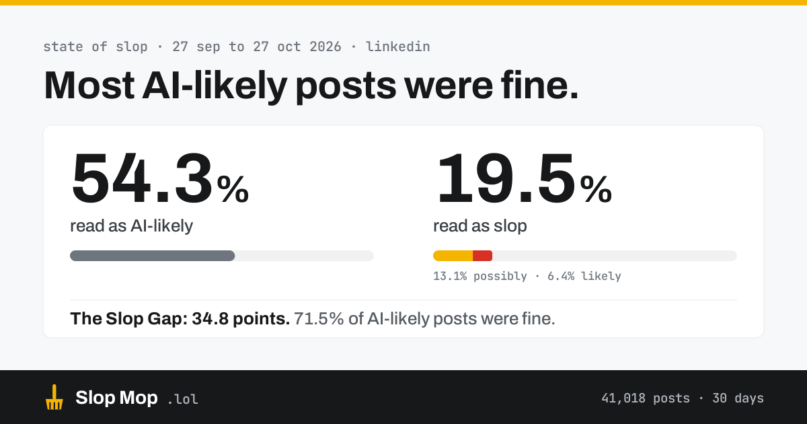

Most AI-likely posts were fine
Slop Mop read more than 40,000 LinkedIn posts between 27 September and 27 October. One in five read as slop. More than half read as AI-likely. They were mostly different posts.

One post in five
At the default sensitivity, 80.5% of posts looked fine. 13.1% were possibly slop and 6.4% were likely slop. The average post scored 23.9 out of 100, and the median 18.
Sensitivity moves the line a long way. On Mild, 13.3% of posts count as slop. On Aggressive, 44% do. Everything else on this page uses Moderate, the default.
The same posts at each sensitivity
| Sensitivity | Looks fine | Possibly slop | Likely slop | All slop |
|---|---|---|---|---|
| Mild | 86.7% | 9.5% | 3.8% | 13.3% |
| Moderate default | 80.5% | 13.1% | 6.4% | 19.5% |
| Aggressive | 56.0% | 20.4% | 23.6% | 44.0% |
The Slop Gap
Slop Mop asks two separate questions about every post: is this slop, and does it read as AI-written? This month the answers came apart. 54.3% of posts read as AI-likely and 19.5% read as slop. We call the distance between those two numbers the Slop Gap. In October it was 34.8 points.
71.5% of the AI-likely posts were fine. A model may well have helped write them, and they were still worth reading. Going the other way, 20.4% of the slop sat under the AI-likely line. Plenty of slop needs no help from a model.
That's why Slop Mop judges the writing. An AI-likely reading never flags a post on its own.
Each square is a share of all 41,018 posts. AI-likely means an AI-likelihood of 0.5 or more.
The signs that showed up most
Empty praise was the strongest sign in 33.6% of posts: “game-changer”, “incredible”, “so proud”, with nothing said about what or why. It was strong in more than half of the slop.
“Not X, but Y” came a close second, the strongest sign in 31.1% of posts. It knocks down a claim nobody made so the real point sounds like a reveal. After those two there's a long drop to Engagement bait at 10.3% and Scroll-stopper at 6.5%.
- Empty praise33.6%54%
- Not X, but Y31.1%51%
- Engagement bait10.3%13%
- Scroll-stopper6.5%17%
- Too-tidy story4.9%14%
- Hype words4.8%12%
- Flowery prose4.1%11%
- Stiff phrasing2.8%1%
- No-catch promises1.2%3%
“Strongest sign in” is the share of all posts where that tell scored highest. “Strong in slop” is the share of slop posts where it scored 0.5 or more.
Empty praise
Evaluation with nothing behind it: 'game-changer', 'incredible', 'so proud' without saying what or why.
Not X, but Y
Contrast framing: knocking down a claim nobody made so the real point sounds like a reveal.
When slop peaks
Slop peaks on Monday, when 20.7% of what readers scrolled past was slop, and dips on Sunday, at 16.1%. By hour, the high point is 06:00 UTC at 24.0% and the low is 22:00 UTC at 15.1%.
These are shares of checks, so a post seen twice counts twice: they describe what people actually scrolled past. Hours are UTC.
By day of the week
- Sunday16.1%
- Monday20.7%
- Tuesday19.4%
- Wednesday19.4%
- Thursday19.8%
- Friday18.6%
- Saturday19.4%
By hour (UTC)
Day by day
slop share the likely-slop part of it. Faded columns had fewer than 200 checks.
What readers said
Readers who voted sided with Slop Mop's verdict 53.3% of the time. That's 199 votes with a side, from 31 people: a small sample and close to a coin flip, so treat it as a first read.
Voters agreed with the slop verdict a little more often than with the AI-likelihood reading, which they matched 46.2% of the time. When a reader disagrees, their vote wins in their own feed and the post goes to a person for review.
How this was measured
- Window. 27 September 2026 to 27 October 2026, 30 days. Every post someone with Slop Mop scrolled past in the window, scored once in production.
- Posts. 41,018 posts, from 46,534 checks by 156 active installs. Slop Mop read 124 million tokens of text to score them.
- 40,520 came from LinkedIn. Another 498 (1.2%) came from early testing on other sites. They're too few to report on separately and are included in the totals.
- Sensitivity. Moderate, the default, unless a chart says otherwise. Slop means Possibly or Likely slop.
- AI-likely. An AI-likelihood of 0.5 or more. Slop Mop asks this separately, and it never flags a post on its own.
- Strong tell. A tell scoring 0.5 or more on its 0 to 1 scale.
- Left out. 536 posts seen at the end of the window hadn't been scored into the analytics yet, about 1.3%.
Where the mop misses
Judging writing is subjective, and Slop Mop will be wrong. The reader votes above are the clearest measure of that we have so far, and they say there's work to do. Every vote that disagrees with a verdict is reviewed, and the ones Slop Mop got wrong are used to tune the tells and the score.
If a verdict looks badly off, email hello@slopmop.lol with the post's link.
Download the data json
Next month
A new State of Slop comes out every month. Get it by email with the form below, or bookmark the archive.